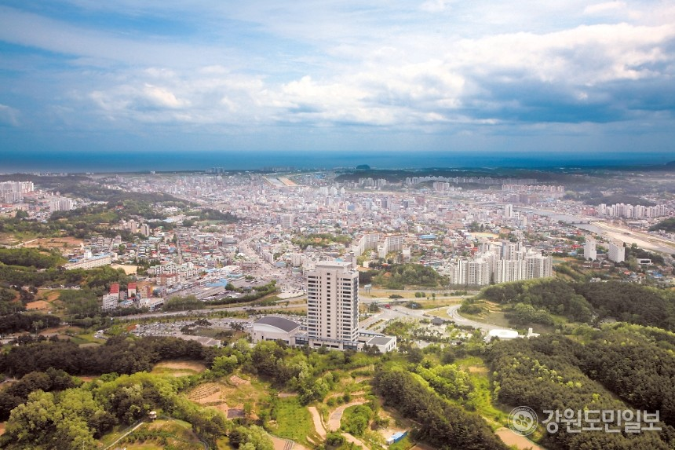

강원도 영동지방의 중앙부, 위도상으로는 동경 129° 04'~128° 35', 북위 37° 27'~37° 54' 사이에 위치한다.
동쪽으로는 동해에 면하고, 서쪽으로는 홍천군 내면과 평창군 진부면·대관령면, 남쪽으로는 동해시와 정선군 임계면·여량면, 북쪽으로는 양양군 현북면·현남면에 접한다.
동서 길이는 43.5㎞, 남북 길이는 45.9㎞, 동해와 연접한 해안선 길이는 73.72㎞에 이르며, 면적은 1040.38㎢로 강원도 면적의 6.2%에 해당한다.
행정구역은 1읍, 7면, 13동으로 이루어져 있으며, 인구는 21만 5239명(2018년)이다. 시를 상징하는 꽃은 목백일홍, 나무는 소나무, 새는 고니, 동물은 호랑이이며, 도시 브랜드는 강릉을 상징하는 소나무와 관광휴양 도시를 접목한 '솔향강릉(Pine City Gangneung)'이다. 시청 소재지는 홍제동이다.
기후 특징은 산맥의 급경사면이 바다와 접해 있으며, 해안선을 따라 좁고 길게 형성되어 있는 지형적 여건에 따라 위도에 비하여 겨울철은 온난하고 여름철은 비교적 시원한 편이어서 연기온의 격차가 적은 편에 속한다.
간혹 북동기류의 장시간 유입시 겨울철은 대설, 여름철은 지속적인 강우와 저온현상이 나타나기도 한다. 1월 평균기온 -4.0℃, 8월 평균기온 24.6℃, 연평균기온 13.4℃이고, 연평균 강수량은 영동북부지방이 1,400㎜로 많은 편에 속하며, 영동남부지방은 1,200㎜ 정도의 분포를 보이고 있다. 비슷한 위도상의 서해안의 다른 지역과 비교하면 연평균기온이 일반적으로 높으며, 연강수량도 많은 편이다.
이 지방은 해풍의 영향을 일부 받기도 하지만, 태백산맥을 넘어 불어오는 하강풍(下降風)인 서풍계 바람의 영향을 주로 받고 있는데, 특히 겨울과 봄에 부는 서풍계의 강풍(强風, 이른바 襄·江之風)은 교통뿐만 아니라 대형산불 발생으로 주민생활에 큰 불편을 주고 있다.